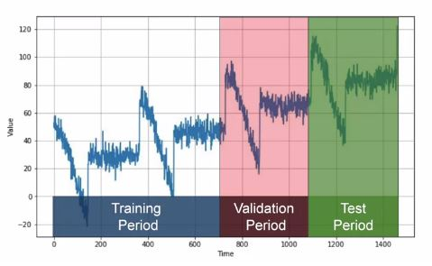
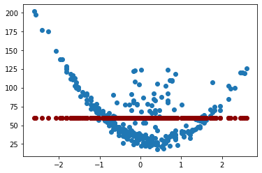
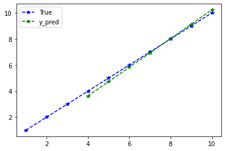
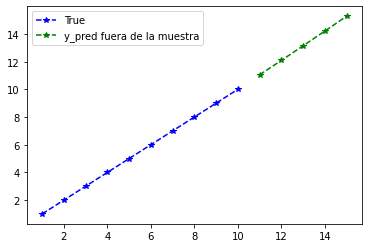

RNA para series de tiempo¶
Para el pronóstico de series de tiempo se debe tener en cuenta que los datos tienen una secuencia que no se debe alterar en el entrenamiento. Por tanto, la división de los datos se hace en el mismo orden temporal: los datos más lejanos se utilizan para el entrenamiento y los más recientes para validación y prueba.

DataSetTS¶
La X será una secuencia temporal que se usa para pronosticar una
y. El valor de la y es el dato siguiente al último de la
variable X. Se puede usar varios valores en X para pronosticar
un solo valor en y o una secuencia de valores en y.
Los datos de la serie temporal se deben transformar en la siguiente estructura:
X |
y |
|---|---|
time step |
feature |
time step |
feature |
time step |
feature |
time step |
feature |
Las columnas de la variable X son el time step: una secuencia de la
serie temporal. El dato siguiente al último de esta secuencia es el
valor de la variable y que lo llamaremos feature.
Las filas de la variable X son las muestras (samples). La anterior
estructura tiene 4 muestras.
Supongamos la siguiente secuencia:
sequence = [1, 2, 3, 4, 5, 6, 7, 8, 9, 10]
Debemos organizar los datos de la siguiente manera:
X, y
[1, 2, 3], [4]
[2, 3, 4], [5]
[3, 4, 5], [6]
...
Esta estructura tiene un time step de 3 y el feature es de 1.
Esto significa que se usan 3 valores históricos para predecir 1 valor.
Crearemos una función para crear la estructura.
import numpy as np
def split_sequence(sequence, time_step):
X, y = list(), list()
for i in range(len(sequence)):
end_ix = i + time_step
if end_ix > len(sequence) - 1:
break
seq_x, seq_y = sequence[i:end_ix], sequence[end_ix]
X.append(seq_x)
y.append(seq_y)
return np.array(X), np.array(y)
timeSerie = np.array([1, 2, 3, 4, 5, 6, 7, 8, 9, 10])
time_step = 3
split_sequence(timeSerie, time_step)
(array([[1, 2, 3],
[2, 3, 4],
[3, 4, 5],
[4, 5, 6],
[5, 6, 7],
[6, 7, 8],
[7, 8, 9]]),
array([ 4, 5, 6, 7, 8, 9, 10]))
Otra forma de visualizar lo anterior:
X, y = split_sequence(timeSerie, time_step)
for i in range(len(X)):
print(X[i], y[i])
[1 2 3] 4
[2 3 4] 5
[3 4 5] 6
[4 5 6] 7
[5 6 7] 8
[6 7 8] 9
[7 8 9] 10
Cantidad de muestras (samples):
X.shape[0]
7
Time step:
X.shape[1]
3
Haremos una predicción con una red neuronal artificial Feedforward. Más adelante se hará con el conjunto de train y de test y con la estandarización de los datos.
Arquitectura de la red:¶
from keras.models import Sequential
from keras.layers import Dense
import matplotlib.pyplot as plt
model = Sequential()
model.add(Dense(10, activation="relu", input_shape=(time_step,)))
model.add(Dense(1))
model.compile(optimizer="adam", loss="mse")
history = model.fit(X, y, epochs=500, batch_size=1, verbose=0)
Evaluación del desempeño:¶
model.evaluate(X, y)
1/1 [==============================] - 0s 124ms/step - loss: 8.8056e-04
0.000880562060046941
plt.plot(range(1, len(history.epoch) + 1), history.history["loss"], label="Train")
plt.xlabel("epoch")
plt.ylabel("Loss")
plt.legend();

Predicción del modelo:¶
El modelo se entrenó con times step = 3 en los valores de entrada
(X), es decir, cada muestra tenía 1 fila y 3 columnas. Para
pronosticar se debe ingresar muestras con la misma dimensión
\((1 \times 3)\).
X_input = np.array([8, 9, 10])
X_input = X_input.reshape((1, time_step)) # 2D: 1 fila y 3 columnas.
X_input
array([[ 8, 9, 10]])
X_input.shape
(1, 3)
Se espera que el modelo haga la predicción y el output sea 11.
model.predict(X_input)
1/1 [==============================] - 0s 55ms/step
array([[11.045956]], dtype=float32)
y_pred = model.predict(X)
y_pred
1/1 [==============================] - 0s 14ms/step
array([[ 3.9480417],
[ 4.9621644],
[ 5.9761295],
[ 6.990095 ],
[ 8.004061 ],
[ 9.018025 ],
[10.031992 ]], dtype=float32)
y_pred.shape
(7, 1)
timeSerie[3:]
array([ 4, 5, 6, 7, 8, 9, 10])
len(timeSerie)
10
plt.plot(
range(1, len(timeSerie) + 1),
timeSerie,
color="b",
marker="*",
linestyle="--",
label="True",
)
plt.plot(
range(time_step + 1, time_step + 1 + len(y_pred)),
y_pred,
color="g",
marker="*",
linestyle="--",
label="y_pred",
)
plt.legend();

Predicción fuera de la muestra:¶
La predicción fuera de la muestra también se llama Out-of-Bag. Se debe tener en cuenta que el modelo necesita muestras (samples) con el time step definido y por fuera de la muestra no tenemos estos datos, así que se toma la última muestra de la serie de tiempo para hacer la primera predicción fuera de la muestra y esta predicción se agrega a la muestra para realizar la siguiente predicción y así sucesivamente.
Las muestras tendrán siempre el mismo time step, cuando se agrega un valor a la muestra se elimina el primer valor para conservar el tamaño de la muestra.
Note que las predicciones que en un principio son las salidas del modelo, se convertirán posteriormente en las entradas del modelo.
La última muestra tiene los últimos 3 valores (últimos 3 time step).
timeSerie[-time_step:]
array([ 8, 9, 10])
timeSerie[-time_step:].shape
(3,)
timeSerie[-time_step:][np.newaxis].shape
(1, 3)
predictions = []
time_prediction = 5 # cantidad de predicciones fuera de la muestra
first_sample = timeSerie[-time_step:] # última muestra dentro de la serie de tiempo
current_batch = first_sample[np.newaxis] # Transformación en muestras y time step
for i in range(time_prediction):
current_pred = model.predict(current_batch, verbose=0)[0]
# Guardar la predicción
predictions.append(current_pred)
# Actualizar el lote para incluir ahora la predicción y soltar el primer valor (primer time step)
current_batch = np.append(current_batch[:, 1:], [[current_pred]])[np.newaxis]
predictions
[array([11.045956], dtype=float32),
array([12.092222], dtype=float32),
array([13.143522], dtype=float32),
array([14.207874], dtype=float32),
array([15.281992], dtype=float32)]
plt.plot(
range(1, len(timeSerie) + 1),
timeSerie,
color="b",
marker="*",
linestyle="--",
label="True",
)
plt.plot(
range(len(timeSerie) + 1, len(timeSerie) + len(predictions) + 1),
predictions,
color="g",
marker="*",
linestyle="--",
label="y_pred fuera de la muestra",
)
plt.legend();

¿Cómo cambia la predicción fuera de la muestra para 50 períodos?